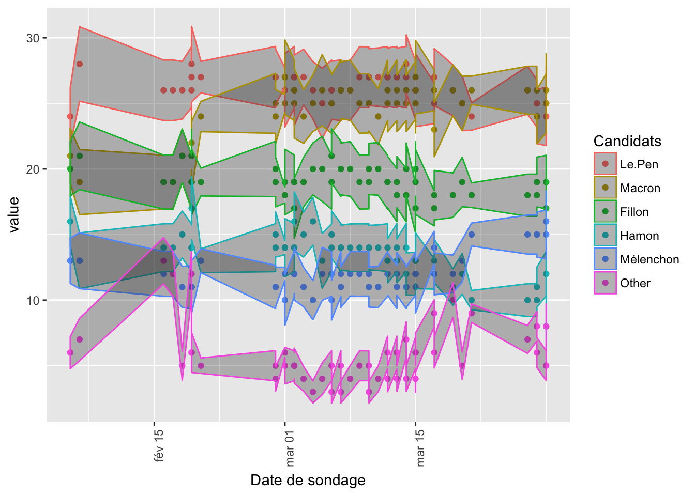

library(XML)
library(stringr)
library(reshape2)
library(ggplot2)
library(threejs)
library(curl)
library(RCurl)
library(httr)
library(ggmap)
library(leaflet)
library(htmlwidgets)
library(jsonlite)
library(data.table)
library(plotly)
library(V8)
library("topogRam")
library(DT)
library(purrr)
library(classInt)
library(RColorBrewer)
library(rvest)sondage=read.table("http://elections.huffingtonpost.com/pollster/api/v2/questions/france-pres-2017/poll-responses-clean.tsv",sep="\t",header = T)
sondage$type=substr(sondage$survey_house,1,10)data=melt(sondage[,c(1:6,9,13,18)],id.vars=c("start_date","observations","type"))
data$start_date=as.Date(as.character(data$start_date),"%Y-%m-%d")data$se=1.96*(data$value/100*(1-data$value/100)/data$observations)^(0.5)*100
limits <- aes(ymax = value + se, ymin=value - se)
p=ggplot(data,aes(start_date,value,color=variable))+geom_point()+geom_ribbon(limits,alpha=0.3)+
theme(axis.text.x = element_text(angle = 90, hjust = 1))+ guides(color=guide_legend(title="Candidats"))+xlab("Date de sondage")
p When using ggplotly :
ggplotly(p)Copyright © 2016 Kezhan SHI